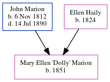

Mary Ellen 'Dolly' Marion 1851 -
[ Home ] | [ Calendar ] | [ Surnames Index ] | [ Family History ]The child of John Marion (a confectioner: 254 king street: importer of french confectionary and toys) and Ellen Haily, Mary Marion, the first cousin four-times-removed on the father's side of Michele Copp (née Phillips), was born in South Carolina in 18511. In 1860, she was living in Charleston Ward 4, Charleston, South Carolina1.
Parents
- John was born on Nov 6, 1812
- Ellen was born in 1824
Citations
- 1860 United States Federal Census Online publication - Provo, UT, USA: The Generations Network, Inc., 2004.Original data - United States of America, Bureau of the Census. Eighth Census of the United States, 1860. Washington, D.C.: National Archives and Records Administration, 1860. M653, 1
Family Tree
Generated by ged2site. Last updated on Jun 24, 2024